library(tidyverse)
library(patchwork) ## to get nice rendered visuals in quarto
library(KFAS)Algorithm 1
This code depends on just a few packages.
1. Data Processing
We summarize our data cleaning process below to serve as an example, but the data cleaning needs will be different depending on the particulars of the wastewater surveillance system.
inputs: raw lab values of viral load observations
data processing steps:
identify observations below the level of detection using statistical analysis
align all observations to Mondays
transform copies per L to a log10 scale
average replicates to give one weekly measurement per week per location
only use locations where the primary WWTP has at least 85% coverage and observations within 1 month of last date
ensure there is a row for each week, even if the observation is missing
create an indicator of missing values
remove irrelevant features/variables
output: a data frame with four variables:
date
name of location
log10 copies per/L
missing data indicator
# load the cleaned/prepped data
all_ts_observed <- read.csv("Data/synthetic_ww_time_series.csv")
all_ts_observed$dates <- as.Date(all_ts_observed$dates)
head(all_ts_observed) dates name value ts_missing colors
1 2021-05-24 Lift station A 3.397031 FALSE #44AA99
2 2021-05-31 Lift station A NA TRUE #44AA99
3 2021-06-07 Lift station A NA TRUE #44AA99
4 2021-06-14 Lift station A NA TRUE #44AA99
5 2021-06-21 Lift station A 4.543146 FALSE #44AA99
6 2021-06-28 Lift station A 4.356128 FALSE #44AA992. Initialize Model
The state space model we are fitting needs a certain number of observations to initialize the model. Sometimes this is called the “burnin” period. We have found that about 10 weeks of complete observations are necessary to obtain a good model fit. However, since some of the sampling locations have missing data at the beginning of the series, we set the burnin period to 15 weeks for all series. The code chunk below identifies the dates which will be considered part of the burnin period.
burnin <- 15
date_burnin <- all_ts_observed %>% dplyr::filter(name == 'WWTP') %>% dplyr::select(dates) %>% dplyr::nth(burnin) %>% dplyr::pull(dates)
init_vals <- c(1, .1) ## set observation variance to be larger than state variance. 3. Online Estimates
The model is fit using the KFAS package in R, which can fit any state space model, not just our smoothing spline model. However, KFAS does not use rolling estimation.
We have written wrapper functions which fits the smoothing spline state space model and which performs the rolling estimation.
KFAS_rolling_estimation.r and KFAS_state_space_spline.r
State space spline using KFAS::fitSSM . Note the specification of matrices– this is what gives the smoothing spline structure. Different choice of matrices will give a different model structure, e.g. AR(1), ARIMA, etc.
KFAS_state_space_spline <- function(ts_obs, name, ts.missing, ts_dates, init_par){
## Specify model structure
A = matrix(c(1,0),1)
Phi = matrix(c(2,1,-1,0),2)
mu1 = matrix(0,2)
P1 = diag(1,2)
v = matrix(NA)
R = matrix(c(1,0),2,1)
w = matrix(NA)
#function for updating the model
update_model <- function(pars, model) {
model["H"][1] <- pars[1]
model["Q"][1] <- pars[2]
model
}
#check that variances are non-negative
check_model <- function(model) {
(model["H"] > 0 && min(model["Q"]) > 0)
}
# Specify the model
mod <- KFAS::SSModel(ts_obs ~ -1 +
SSMcustom(Z = A, T = Phi, R = R, Q = w, a1 = mu1, P1 = P1), H = v)
# Fit the model
fit_mod <- KFAS::fitSSM(mod, inits = init_par, method = "BFGS",
updatefn = update_model, checkfn = check_model, hessian=TRUE,
control=list(trace=FALSE,REPORT=1))
## Format for output
ts_len <- length(ts_obs)
smoothers <- data.frame(est = KFAS::KFS(fit_mod$model)$alphahat[,1],
lwr = KFAS::KFS(fit_mod$model)$alphahat[,1]- 1.96*sqrt(KFAS::KFS(fit_mod$model)$V[1,1,]),
upr = KFAS::KFS(fit_mod$model)$alphahat[,1]+ 1.96*sqrt(KFAS::KFS(fit_mod$model)$V[1,1,]),
ts_missing = ts.missing,
name = rep(name[1], times = ts_len),
fit = rep("smoother", times = ts_len),
date = ts_dates,
sigv = rep(fit_mod$optim.out$par[1], times = ts_len),
sigw = rep(fit_mod$optim.out$par[2], times = ts_len),
obs = ts_obs,
resid = rstandard(KFAS::KFS(fit_mod$model), type = "recursive"),
conv = fit_mod$optim.out$convergence)
filters <- data.frame(est = KFAS::KFS(fit_mod$model)$att[,1],
lwr = KFAS::KFS(fit_mod$model)$att[,1]- 1.96*sqrt(KFAS::KFS(fit_mod$model)$Ptt[1,1,]),
upr = KFAS::KFS(fit_mod$model)$att[,1]+ 1.96*sqrt(KFAS::KFS(fit_mod$model)$Ptt[1,1,]),
ts_missing = ts.missing,
name = rep(name[1], times = ts_len),
fit = rep("filter", times = ts_len),
date = ts_dates,
sigv = rep(fit_mod$optim.out$par[1], times = ts_len),
sigw = rep(fit_mod$optim.out$par[2], times = ts_len),
obs = ts_obs,
resid = rstandard(KFS(fit_mod$model), type = "recursive"),
conv = fit_mod$optim.out$convergence)
## combine it all for output.
kfas_fits_out <- dplyr::bind_rows(smoothers,filters)
return(kfas_fits_out)
}Rolling estimation code: Note that this calls KFAS_state_space_spline.r multiple times: once for the initialization using the burnin period set above, and the once for each subsequent time point.
KFAS_rolling_estimation <- function(init_vals_roll,
ts_obs_roll,
ts_name_roll,
dates_roll,
init.par_roll,
ts.missing_roll){
## perform initial fit on "burnin" of first init_vals_roll time points
fits_rolling<- KFAS_state_space_spline(ts_obs = ts_obs_roll[1:init_vals_roll],
name = ts_name_roll,
ts.missing = ts.missing_roll[1:init_vals_roll],
ts_dates = dates_roll[1:init_vals_roll],
init_par = init.par_roll)
# just keep estimates for dates in burnins
# smoother need not be kept
fits_rolling <- dplyr::filter(fits_rolling,
date == dates_roll[1:init_vals_roll],
fit == "filter")
# use variance estimates from burnin fit to initialize model for next time point
next.par <- c(fits_rolling$sigv[init_vals_roll], fits_rolling$sigw[init_vals_roll])
## perform rolling estimation for each time point
for(i in (init_vals_roll +1):length(ts_obs_roll)){
# just looking to current time point
ts_partial <- ts_obs_roll[1:i]
# fit the model for the next time point
ith_fit <- KFAS_state_space_spline(ts_obs = ts_partial,
name = ts_name_roll,
ts.missing = ts.missing_roll[1:i],
ts_dates = dates_roll[1:i],
init_par = next.par)
# save results of model fit
if(exists("ith_fit")){
fits_rolling <- rbind(fits_rolling, dplyr::filter(ith_fit, date == dates_roll[i], fit == "filter"))
# get updated variance estimates for observation and state
next.par <- c(ith_fit$sigv[nrow(ith_fit)], ith_fit$sigw[nrow(ith_fit)])
## compute smoother at final time point
if(i == length(ts_obs_roll)){
fits_rolling <- rbind(fits_rolling, dplyr::filter(ith_fit, fit == "smoother"))
}
rm(ith_fit)
}else{ ## I don't know how to error handling, feel free to do a pull request
print(rep("FAIL", times = 100))
}
}
## give the user an update once each series' estimation is complete
print(paste("Model fit complete: ", ts_name_roll[1]))
return(fits_rolling)
}With these functions, we can fit the model.
## source the custom functions
source("Code/KFAS_state_space_spline.R")
source("Code/KFAS_rolling_estimation.R")
## Rolling estimation for each series
fits_rolling_KFAS <- all_ts_observed %>%
dplyr::group_nest(name, keep = T) %>%
tibble::deframe() %>%
purrr::map(., ~ {
KFAS_rolling_estimation(ts_obs_roll= .x$value,
init_vals_roll = burnin,
ts_name_roll = .x$name,
dates_roll = .x$dates,
ts.missing_roll = .x$ts_missing,
init.par_roll = c(1,.2))
})[1] "Model fit complete: Lift station A"
[1] "Model fit complete: Lift station B"
[1] "Model fit complete: Lift station C"
[1] "Model fit complete: Lift station D"
[1] "Model fit complete: WWTP"save(fits_rolling_KFAS, file = "Data/fits_rolling_KFAS")The online estimates can be extracted from the output of KFAS_rolling_estimation function by selecting rows with fit == filter (online estimates are called filter estimates in the time series literature, so we preserve this vocabulary in the implementation).
online_estimates <- fits_rolling_KFAS %>% dplyr::bind_rows() %>% dplyr::filter(fit == "filter")
head(online_estimates) est lwr upr ts_missing name fit date
1 2.493917 1.483321 3.504513 FALSE Lift station A filter 2021-05-24
2 4.987834 2.156417 7.819251 TRUE Lift station A filter 2021-05-31
3 7.481751 2.480884 12.482618 TRUE Lift station A filter 2021-06-07
4 9.975668 2.752321 17.199016 TRUE Lift station A filter 2021-06-14
5 4.664197 3.493769 5.834625 FALSE Lift station A filter 2021-06-21
6 4.709196 3.776564 5.641829 FALSE Lift station A filter 2021-06-28
sigv sigw obs resid conv
1 0.3621268 0.0234552 3.397031 2.9106553 0
2 0.3621268 0.0234552 NA NA 0
3 0.3621268 0.0234552 NA NA 0
4 0.3621268 0.0234552 NA NA 0
5 0.3621268 0.0234552 4.543146 -1.6277692 0
6 0.3621268 0.0234552 4.356128 -0.9584143 0
One-step-ahead estimates
In state space models, in addition to obtaining the best estimate of “today’s” state based on data through “today”, the one-step-ahead forecasts can also be obtained: The estimate of tomorrow’s state based on data through today.
The KFAS package makes this estimation simple. The function KFAS_state_space_spline.R can be augmented to return the one-step-ahead predictions from the KFS function by accessing the element a, i.e. KFS(fit_mod$model)$a
4. Retrospective Estimates
The KFAS_rolling_estimation function also computes the retrospective estimates. They can be extracted by selecting rows with fit == smoother (retrospective estimates are called smoother estimates in the time series literature. This is true is for any state space model, not just those that have a smoothing spline structure).
retro_estimates <- fits_rolling_KFAS %>% dplyr::bind_rows() %>% dplyr::filter(fit == "smoother")
head(retro_estimates) est lwr upr ts_missing name fit date
1 3.173451 2.804721 3.542180 FALSE Lift station A smoother 2021-05-24
2 3.543552 3.183237 3.903867 TRUE Lift station A smoother 2021-05-31
3 3.866474 3.488974 4.243975 TRUE Lift station A smoother 2021-06-07
4 4.135375 3.789807 4.480943 TRUE Lift station A smoother 2021-06-14
5 4.343412 4.063163 4.623661 FALSE Lift station A smoother 2021-06-21
6 4.483741 4.231136 4.736346 FALSE Lift station A smoother 2021-06-28
sigv sigw obs resid conv
1 0.04089099 0.0145985 3.397031 3.329637 0
2 0.04089099 0.0145985 NA NA 0
3 0.04089099 0.0145985 NA NA 0
4 0.04089099 0.0145985 NA NA 0
5 0.04089099 0.0145985 4.543146 -2.817850 0
6 0.04089099 0.0145985 4.356128 -1.500047 05. Verify model fit
Convergence
All fitted models should be checked for convergence. The code below creates visualizations of the convergence code outputted by the optim function, which is the underlying function that actually performs the model fitting. All of our models fit, so the plots below show that all models (one for each time point after burnin) have converged.
Visuals
Since the models for all the stations do fit well, the below visualizations all look the same. If this were not the case, these visuals are intended to help show if particular intervals of time are failing to converge, which may help with troubleshooting. See the “Troubleshooting model convergence” below for an example of how the plots would look if the estimation of a model failed to converge.
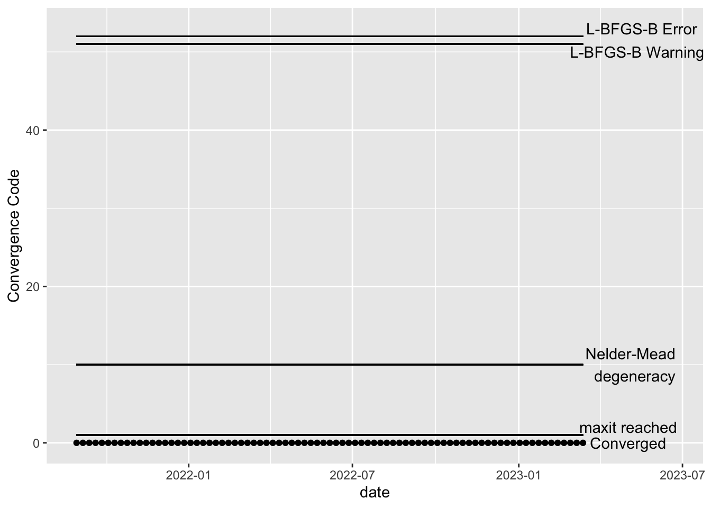


Troubleshooting model convergence (hypothetical example)
If any of the models have not converged, you should not use the output of those models. Here’s an example of what the above plots might look like if the model has not converged for some dates. In the hypothetical example below, the maxit parameter should be increased for the dates with error code 1 and the model corresponding to the date which gave error code 10 should be explored– perhaps there is a lot of missing data or an error was made in the data cleaning step, resulting in extreme values. Note that the L-BFGS-B error codes will only show up if the optimization method is changed to L-BFGS-B.
example <- fits_rolling_KFAS %>% dplyr::bind_rows() %>% dplyr::filter(fit == "filter" & date >= date_burnin & name == "WWTP")
example$conv[25:31] <- 1
example$conv[45] <- 10
ggplot2::ggplot(example, aes(x = date, y = conv)) +
ggplot2::geom_point() +
ggplot2::xlim(min(example$date), max(example$date) + 100) +
ggplot2::geom_segment(x = min(example$date), xend = max(example$date), y = 0, yend = 0) +
ggplot2::annotate("text", x = max(example$date) + 50, y = 0, label = "Converged")+
ggplot2::geom_segment(x = min(example$date), xend = max(example$date), y = 1, yend = 1) +
ggplot2::annotate("text", x = max(example$date) + 50, y = 2, label = "maxit reached")+
ggplot2::geom_segment(x = min(example$date), xend = max(example$date), y = 10, yend = 10) +
ggplot2::annotate("text", x = max(example$date) + 55, y = 10, label = "Nelder-Mead \n degeneracy")+
ggplot2::geom_segment(x = min(example$date), xend = max(example$date), y = 51, yend = 51) +
ggplot2::annotate("text", x = max(example$date) + 60, y = 50, label = "L-BFGS-B Warning")+
ggplot2::geom_segment(x = min(example$date), xend = max(example$date), y = 52, yend = 52) +
ggplot2::annotate("text", x = max(example$date) + 65, y = 53, label = "L-BFGS-B Error") +
ggplot2::ylab("Convergence Code") If example is the value of online_estimatesfor one location, the dates corresponding to models with convergence issues can be returned using the following code snippet.
example %>% dplyr::filter(conv >0) %>% dplyr::pull(date, conv) 1 1 1 1 1 1
"2022-02-14" "2022-02-21" "2022-02-28" "2022-03-07" "2022-03-14" "2022-03-21"
1 10
"2022-03-28" "2022-07-04" Residuals
The visualization of the autocorrelation function (ACF) of the WWTP residuals demonstrates the residuals (observed value - filter estimate) of the state space model show a lack of temporal autocorrelation, meaning that the model adequately accounts for the temporal dependence in the WWTP series. For more on using ACF plots see Chapter 2 of ASTSA.
In support of the conclusion from the ACF plot, the Portmanteau Ljung-Box test fails to reject the null hypothesis that the autocorrelations are not significantly different from 0, meaning there is no evidence to suggest the residuals are not independent.
Code
resid <- fits_rolling_KFAS$`WWTP` %>% ## just look at the WWTP
dplyr::filter(date > date_burnin & fit == "filter") %>% ## filter estimates beyond burnin
dplyr::mutate(resid = obs-est) %>% dplyr::pull()# calcualte residual
# Ljung-Box test
LB_test <- Box.test(resid, type = "Ljung-Box")
# make acf plot
#resid %>% acf1(main = "Autocorrleation plot for Resid = 69th St. Observed - 69th St. Filter", ylab="Autocorrelation") %>%
#text(x = 1, y = .35, labels = paste("Portmanteau test p-value#: ", round(LB_test$p.value, 4)))
Residual plots for all series
Code
TS <- fits_rolling_KFAS %>%
dplyr::bind_rows() %>%
dplyr::filter(fit == "filter" & date >= date_burnin & name == "WWTP")
resid_plots <- fits_rolling_KFAS %>%
dplyr::bind_rows() %>%
dplyr::filter(fit == "filter" & date >= date_burnin) %>%
dplyr::group_nest(name, keep = T) %>%
tibble::deframe() %>%
purrr::map(., ~{
## impute missing values in .x$resid
resid = zoo::na.approx(.x$resid)
# compute p-value
LB_test <- stats::Box.test(resid, type = "Ljung-Box")
# create acf and pacf plots
acf <- forecast::ggAcf(resid, main = paste(.x$name[1], ": ACF"))
pacf <- forecast::ggPacf(resid, main = paste(TS$name[1], ": PACF"))
# output single visual for rendering in tabs
acf + pacf + patchwork::plot_annotation(title = paste("Portmanteu p-value: ", round(LB_test$p.value, 4)))
})Visuals
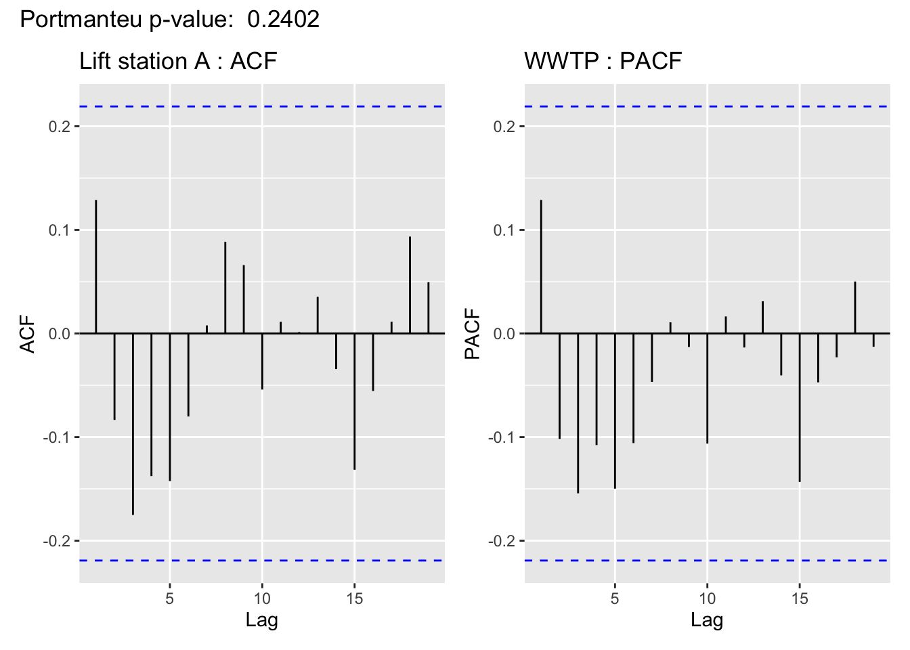
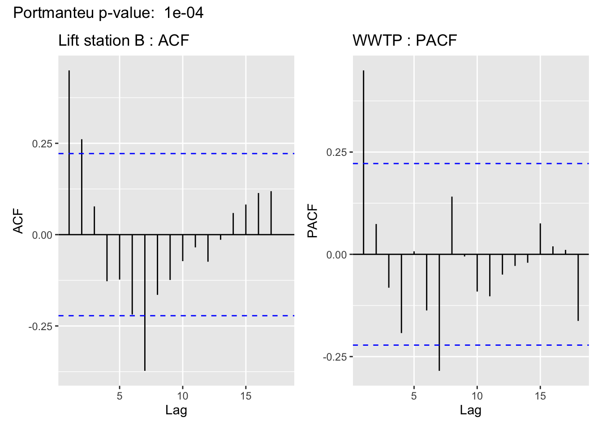
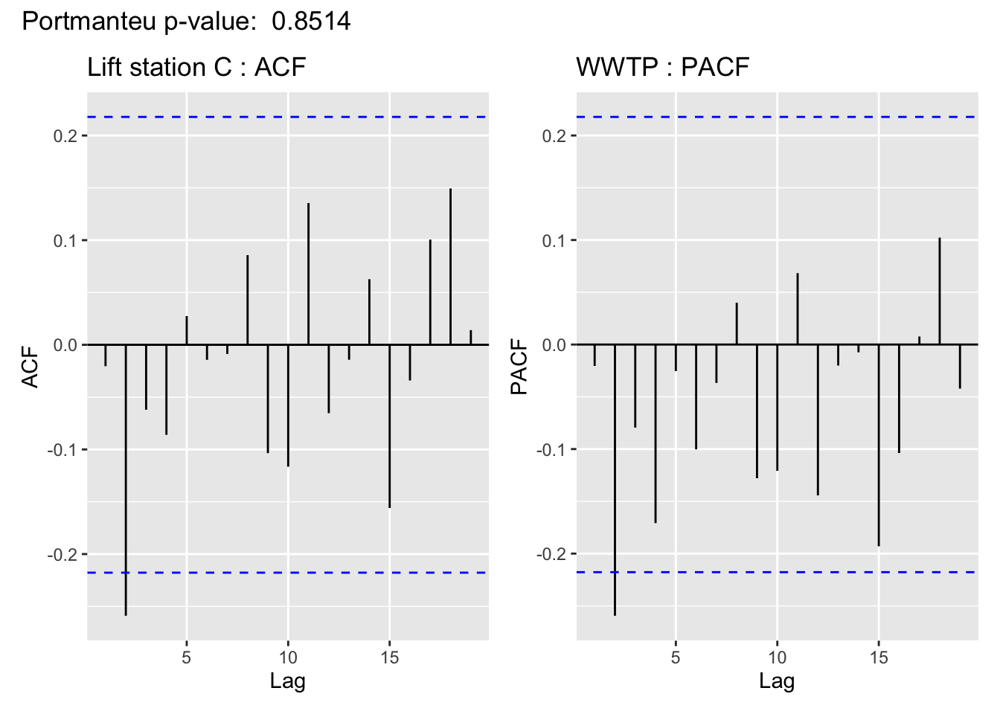
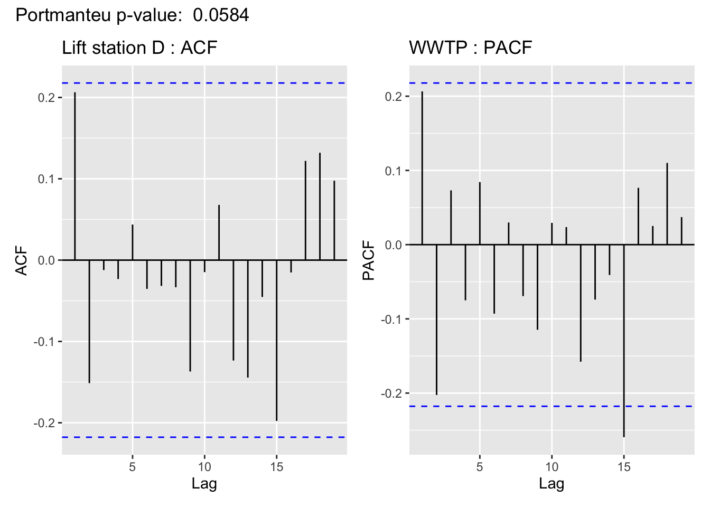
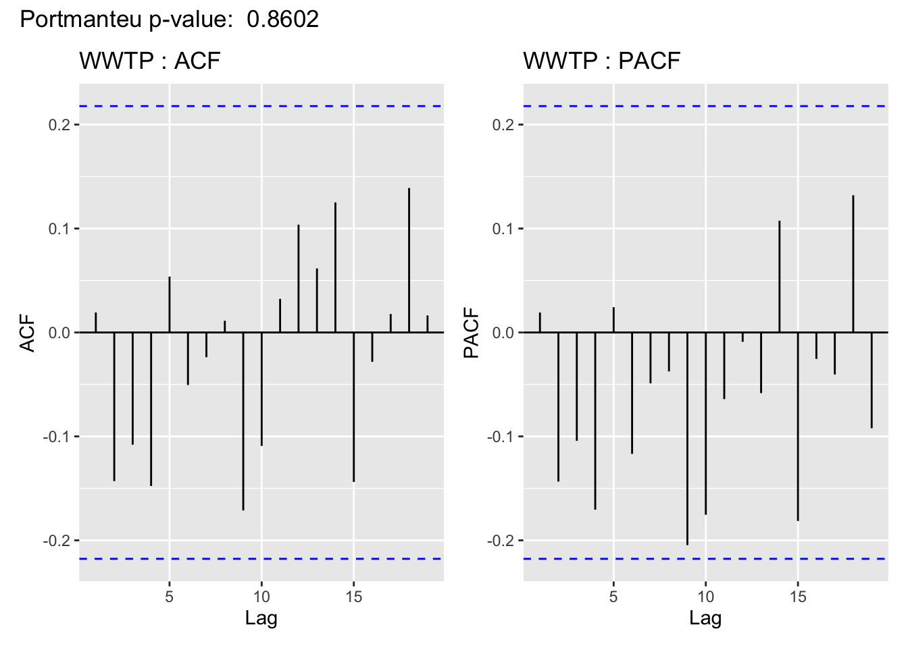
Why is lift station B showing significant autocorrelation?
This is cold be due to a linear imputation of almost half of the missing values, which are missing in a big chunk.
all_ts_observed %>% dplyr::group_by(name) %>%dplyr::summarise(missing = sum(ts_missing), total = n(), percent = 100*sum(ts_missing)/n()) %>% dplyr::arrange(desc(percent))# A tibble: 5 × 4
name missing total percent
<chr> <int> <int> <dbl>
1 Lift station B 42 95 44.2
2 Lift station A 28 95 29.5
3 Lift station D 18 95 18.9
4 Lift station C 9 95 9.47
5 WWTP 4 95 4.216. Compare the variances
As mentioned above, the parameters we estimate in order to obtain the filters and smoothers above are the state and observation variance terms. The table below provides the estimate of the state and observation variances for the final time point of each series. The plots below visualize the estimates for each in time for each series.
Code
par_est_plots <- fits_rolling_KFAS %>% dplyr::bind_rows() %>%
dplyr::mutate(colors = rep(c("#332288", "#AA4499","#44AA99","#88CCEE", "#DDCC77"), each = 95*2)) %>%
dplyr::filter(fit == "filter" & date >date_burnin) %>%
tidyr::pivot_longer(cols = c("sigv", "sigw"), names_to = "par", values_to = "var_est") %>%
dplyr::group_nest(name, keep = T) %>%
tibble::deframe() %>%
purrr::map(., ~{
ggplot2::ggplot(.x, aes(x = date, y = var_est, lty = par)) +
ggplot2::geom_line(col = .x$colors[1]) +
ggplot2::theme_minimal() +
ggplot2::scale_linetype_manual(values = c(4,1), labels = c("Observation", "State"))+
ggplot2::labs(linetype = "Parameter", x = "Date", y = "Parameter estimate", title = "Variance Estimates")
#missing_dates_lwr <- unique(.x$date[which(.x$ts_missing)])
#missing_dates_upr <- unique(.x$date[which(.x$ts_missing)+1])[1:length(missing_dates_lwr)]
#p+ geom_vline(xintercept = missing_dates_lwr)
})
## Final variance estimates
fits_rolling_KFAS %>% dplyr::bind_rows() %>% dplyr::filter(fit == "filter" & date == "2023-03-13") %>% dplyr::select(name, sigv, sigw) name sigv sigw
1 Lift station A 0.04089099 0.01459850
2 Lift station B 0.11938386 0.01280773
3 Lift station C 0.26404292 0.01582208
4 Lift station D 0.25942007 0.01751494
5 WWTP 0.03758964 0.01055225
Variance visualizations
Visuals
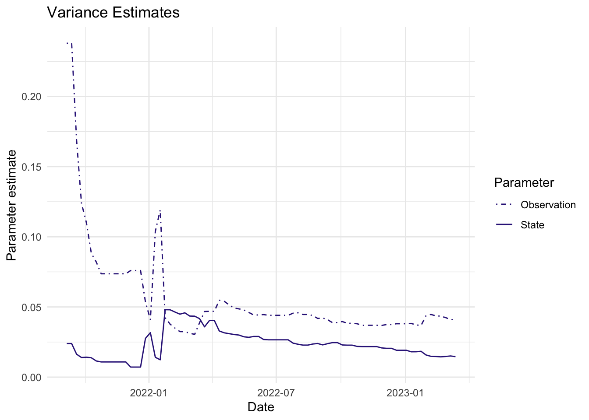
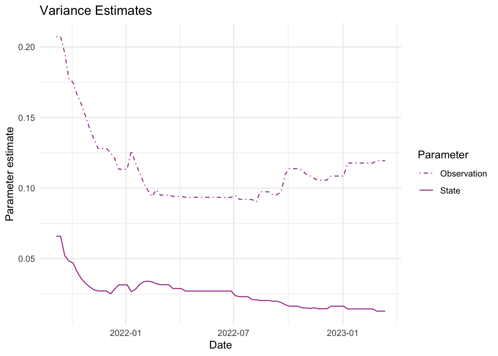
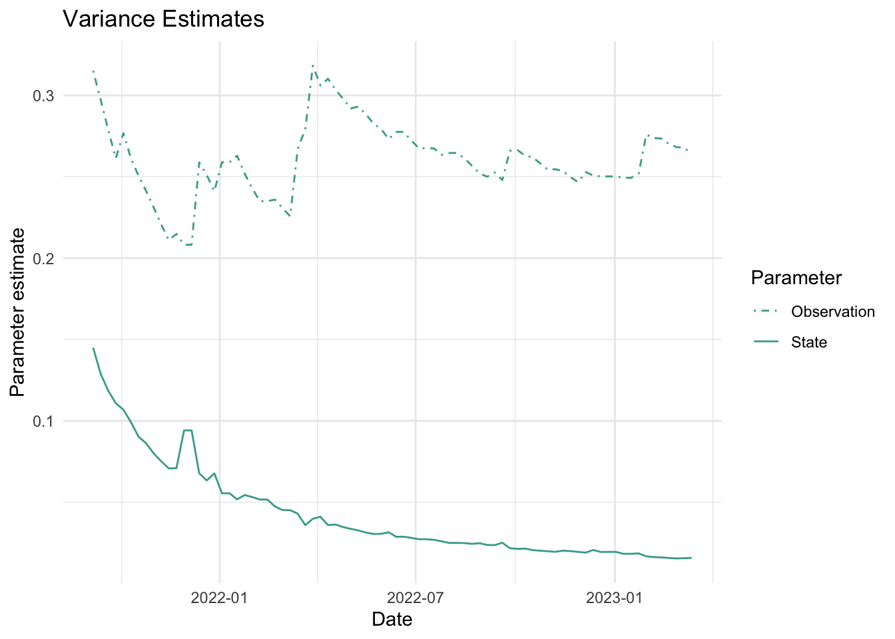
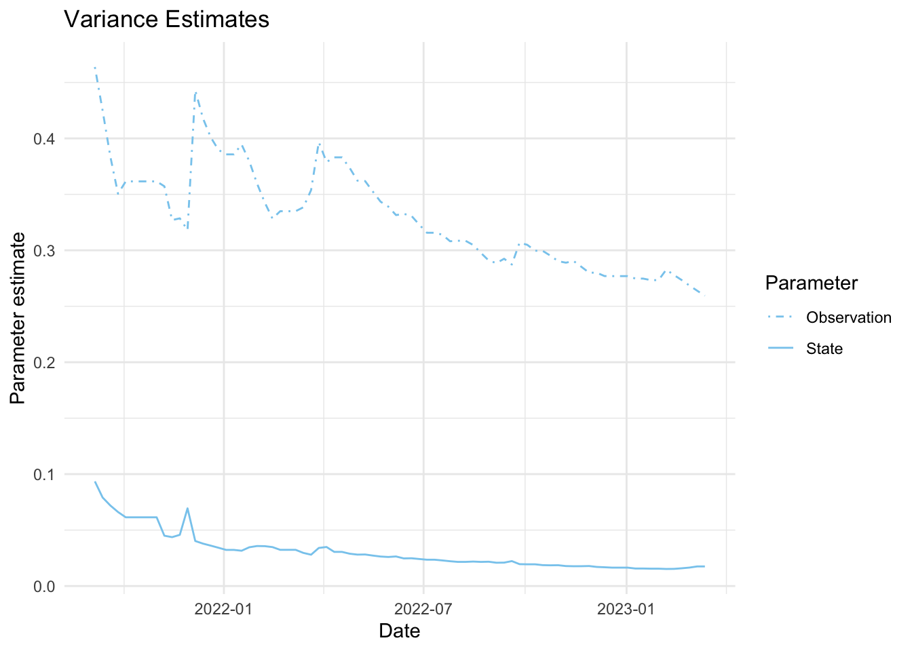
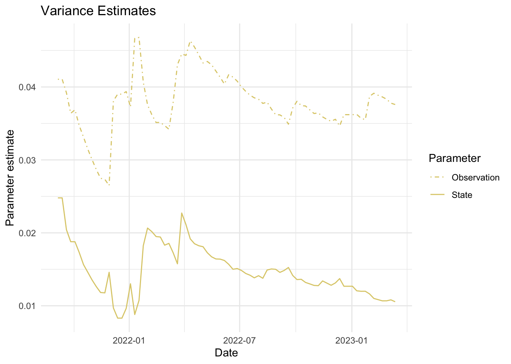
7. Visualize estimates
Filter estimates
Code
#state filter?
library(ggplot2)
library(tidyverse)
source("Code/fplot.R")
load("Data/fits_rolling_KFAS")
# plotting the smoothers for all the series
filter_plots <- fits_rolling_KFAS %>% dplyr::bind_rows() %>%
dplyr::mutate(colors = rep(c( "#AA4499","#44AA99","#88CCEE", "#DDCC77", "#332288"), each = 95*2)) %>%
dplyr::filter(name != "WWTP" & fit == "filter" & date > date_burnin) %>%
dplyr::group_nest(name, keep = T) %>%
tibble::deframe() %>%
purrr::map(., ~ {
plot.dat <- dplyr::bind_rows(dplyr::filter(fits_rolling_KFAS$`WWTP`, fit == "filter" & date > date_burnin), .x)
plot.dat$name <- factor(plot.dat$name, levels(factor(plot.dat$name))[2:1])
#fplot(f= plot.dat, title_char = "Comparison of filter estimates for two locations", line_colors = c( "#332288", .x$colors[1]))
ggplot2::ggplot(plot.dat, aes(x = date, y = est, color = name, fill = name)) +
ggplot2::geom_line(linewidth=2) +
ggplot2::theme_minimal()+
ggplot2::geom_ribbon(aes(ymin=lwr,ymax=upr),alpha=.2) +
ggplot2::scale_color_manual(values = c("#332288", .x$colors[1])) +
ggplot2::scale_fill_manual(values = c(paste("#332288", "50", sep = ""), paste(.x$colors[1], "50", sep = "")), guide = "none") +
ggplot2::labs(title = "Comparison of filter estimates for two locations", x= "Date", y = "Log10 Copies/L-WW", color = "")
})Visualizations
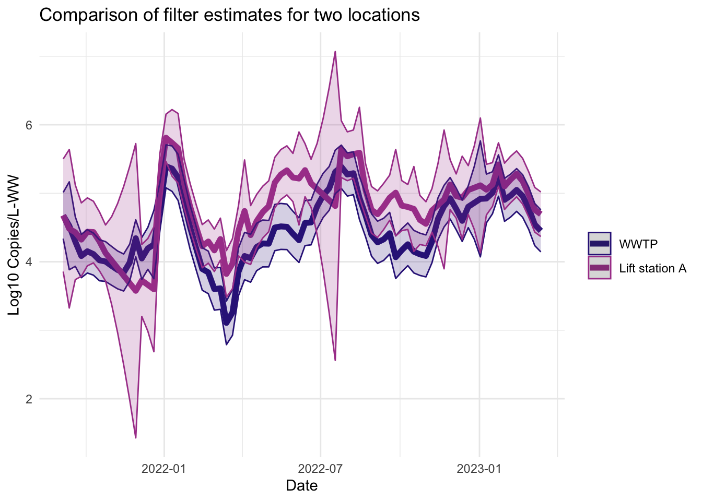
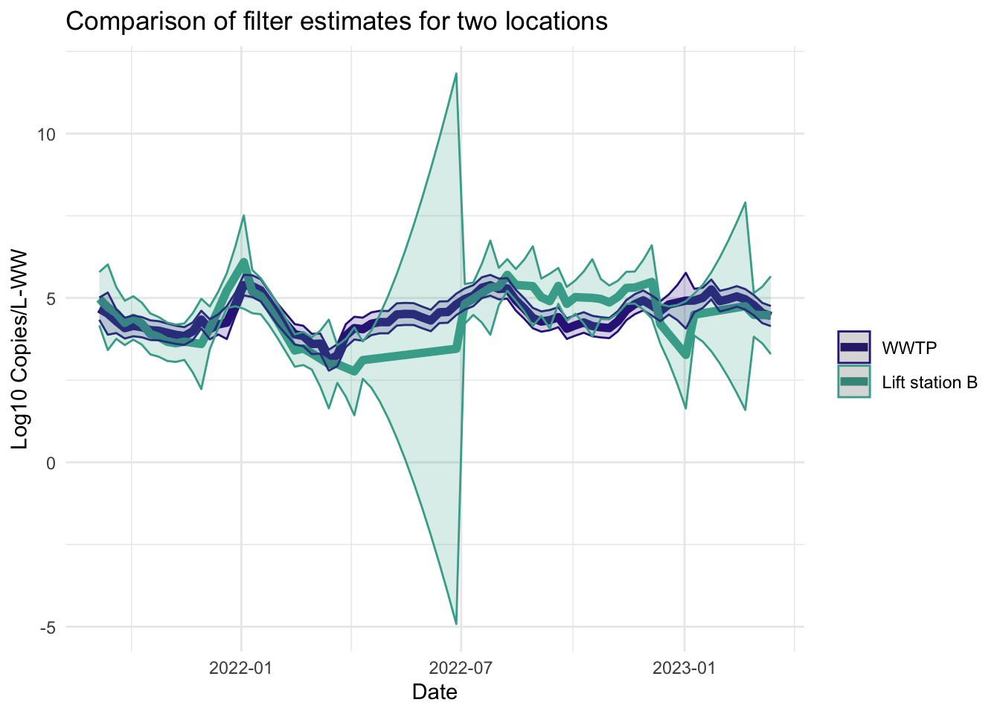
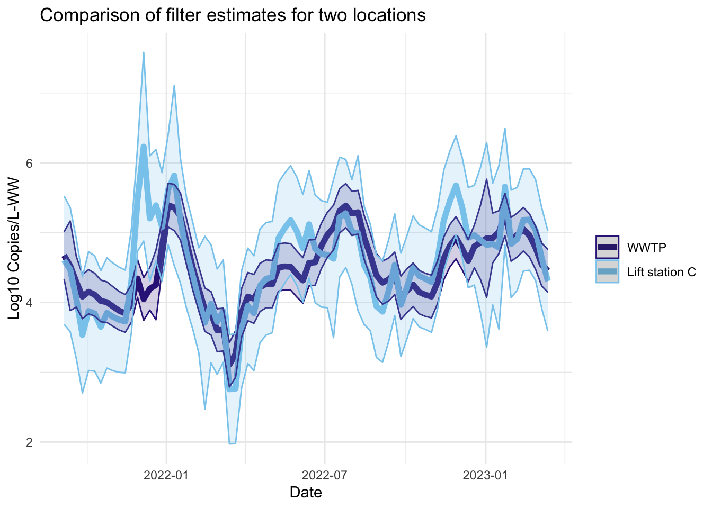
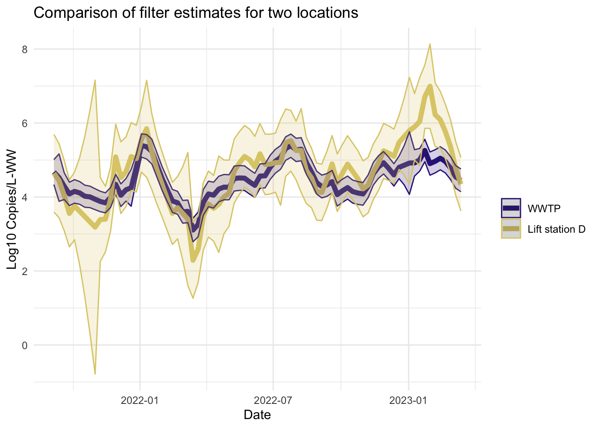
Smoother estimates
Like the filter estimates, the smoother estimates have a point estimate and uncertainty estimates visualized. The resulting estimates are indeed smoothed, since the entire series is used to estimate the model at each time point, so the periods of missing data are less pronounced. The 95% confidence bands appear wider for LS that had more missing data. The smoothed estimates are useful for retrospective analyses.
Code
#state smoother?
library(ggplot2)
source("Code/fplot.R")
# plotting the smoothers for all the series
smoother_plots <- fits_rolling_KFAS %>% dplyr::bind_rows() %>%
dplyr::mutate(colors = rep(c( "#AA4499","#44AA99","#88CCEE", "#DDCC77", "#332288"), each = 95*2)) %>%
dplyr::filter(name != "WWTP" & fit == "smoother"& date > date_burnin) %>%
dplyr::group_nest(name, keep = T) %>%
tibble::deframe() %>%
purrr::map(., ~ {
plot.dat <- dplyr::bind_rows(filter(fits_rolling_KFAS$`WWTP`, fit == "smoother" & date > date_burnin), .x)
plot.dat$name <- factor(plot.dat$name, levels(factor(plot.dat$name))[2:1])
fplot(f= plot.dat, title_char = "Comparison of retrospective estimates for two locations", line_colors = c("#332288",.x$colors[1]))
})Visualizations
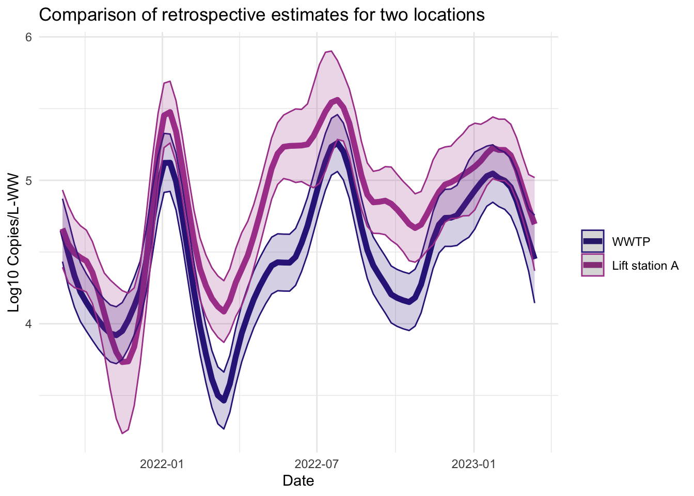
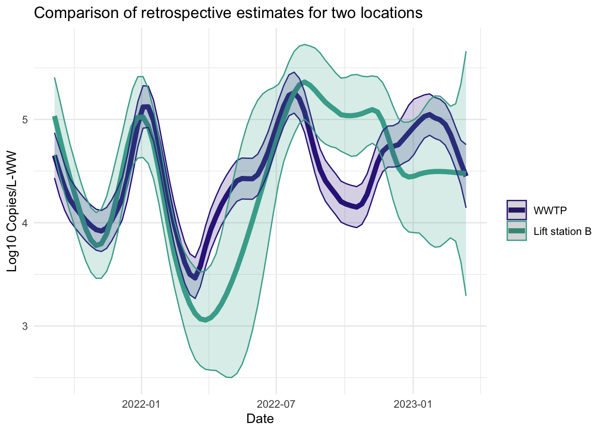
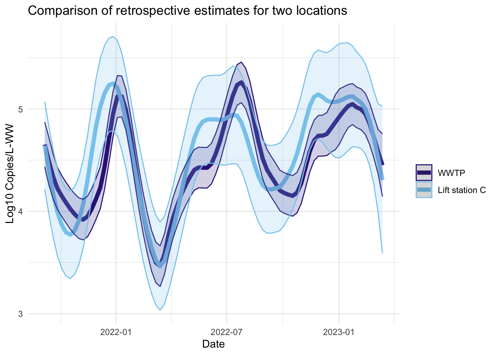
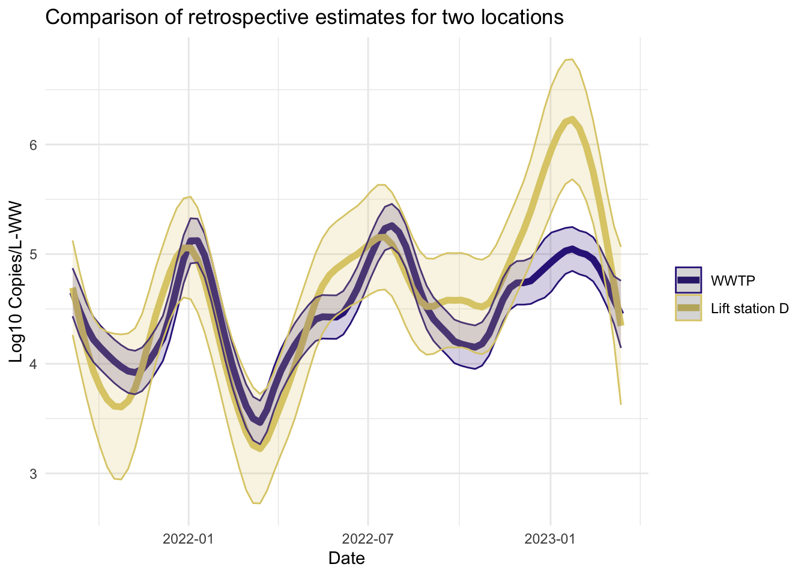